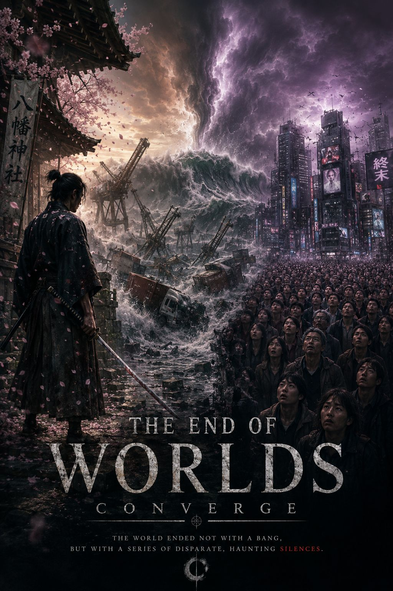

Mythic collapse / cinematic memory
The End of Worlds Converge
A lone sentinel, a silent crowd, and a collapsing coast meet in the final frame of existence.

A lone sentinel, a silent crowd, and a collapsing coast move toward the same white horizon.
Scroll narrative
Four movements, one ending.
Complete narrative
The Full Script
THE END OF WORLDS CONVERGE
A story in four movements
Chapter 01: The Shrine: The Ghost of Honor
Beneath the weathered eaves of the Hachiman Shrine, Kaito stands immobile with his blade in hand. Pink petals settle on steel as he guards not a kingdom, but the last shape of honor against the void itself.
Chapter 02: The City: The Stare of the Masses
Miles to the east, the megalopolis falls into a shared silence. The crowd remains standing, a tapestry of humanity frozen not by the absence of identity, but by the weight of inevitability.
Chapter 03: The Docks: The Breaking of the World
The industrial coast breaks open with a roar. Cranes bow like mourning giants while the rusted fleet is turned into debris, and the old world is reclaimed by the sea one ruin at a time.
Chapter 04: The Convergence: The Final Frame
As the spray reaches the mountain shrine and the flood overtakes the coast, the world resolves into a final, still image. Then the colors drain into white, and only the sound of the waves remains.
Epilogue
The screen of existence flickered, and then there was only the sound of the waves. A ghost of honor, a stare of surrender, and a flood that reclaimed the coast. The silence was not empty. It was complete.
Character showcase
Witnesses, guardians, and the force that outlived them.
Finale
“The screen of existence flickered, and then there was only the sound of the waves.”
A ghost of honor, a stare of surrender, and a flood that reclaimed the coast. The silence was not empty. It was complete.